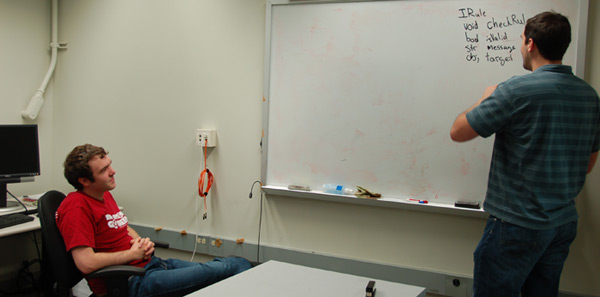
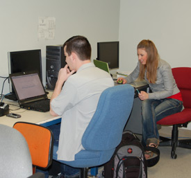

The Human-centered Environments for Learning and Programming (HELP) Lab at Washington State University performs research at the intersection of human-computer interaction and education. Using the diverse methods of human-computer interaction, we design and empirically evaluate computer technologies and pedagogical approaches that help undergraduate students learn within the domains of engineering and computer science.
Because many of our members are computer scientists by training, The HELP Lab has a particular interest in developing technologies and pedagogical approaches for learning, discussing, and building learning communities around computer programming.Our long-standing ALVIS project, and our more recent projects on studio-based learning and blind programming, are indicative of this emphasis. We also have active projects within the domains of chemical engineering education and human-computer interaction education.
Our projects focus on two core research questions:
 1) How can we design effective learning technologies and accompanying pedagogical approaches to help students solve problems, develop “soft” skills (e.g., communication and teamwork skills), build vibrant learning communities, and understand complex phenomena?
2) What is the role and value of such technologies and pedagogical approaches in promoting learning, problem-solving, “soft” skills, community-building, and understanding?
To explore these and related questions, we are firmly committed to user-centered and empirically-driven approaches drawn from the field of human-computer interaction. Empirical studies involving representative users lie at the center of our research, serving to inform and drive our efforts to understand how humans use and interact with learning technologies. Ultimately, we endeavor to use the insights gained through such studies to help students learn more effectively.